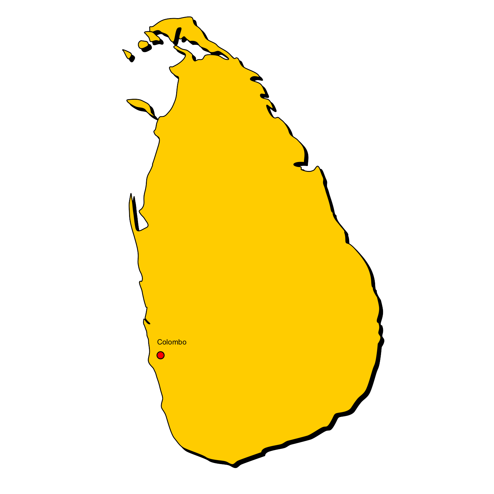
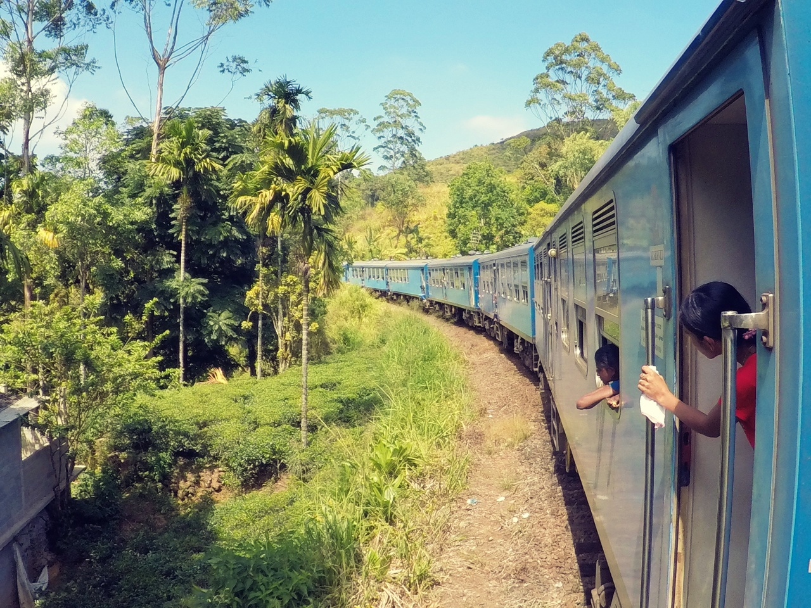

Sri-Lanka
C'est quoi ?
.png)
Le Sri Lanka est une île tropicale située dans l'océan Indien, au sud-est de l'Inde. Le pays est connu pour ses plages de sable fin, ses terrains de cricket réputés, ses temples anciens et sa cuisine épicée.
Découvrir
Le Sri Lanka possède une longue histoire, avec une influence indienne, chinoise et européenne. Le pays est également célèbre pour ses jardins botaniques luxuriants, ses parcs nationaux et ses réserves naturelles, où vous pourrez observer de nombreuses espèces rares d'animaux et d'oiseaux.
.jpg)
Biodiversité
Le climat du Sri Lanka varie selon les régions, mais il est généralement chaud et humide toute l'année. Le meilleur moment pour visiter le pays dépend de vos préférences en matière de météo et de vos activités prévues. Si vous cherchez à vous détendre sur une plage, la saison sèche (de novembre à avril) est la plus adaptée. Si vous prévoyez de faire de la randonnée ou de visiter les parcs nationaux, la saison des pluies (de mai à octobre) peut être une bonne période, car les paysages sont verdoyants et les animaux sont plus actifs.
Voyager
En ce qui concerne les moyens de transport, vous pouvez vous déplacer en avion, en bus ou en train. Les vols intérieurs sont fréquents et relativement bon marché, mais les bus et les trains sont une option plus économique si vous avez du temps à disposition.
Pourquoi ?
Le Sri Lanka est une destination de voyage passionnante et fascinante, offrant une multitude de choses à voir et à faire pour tous les goûts. Si vous avez l'occasion de visiter ce pays, n'hésitez pas à vous immerger dans sa culture unique et à explorer ses merveilles naturelles.